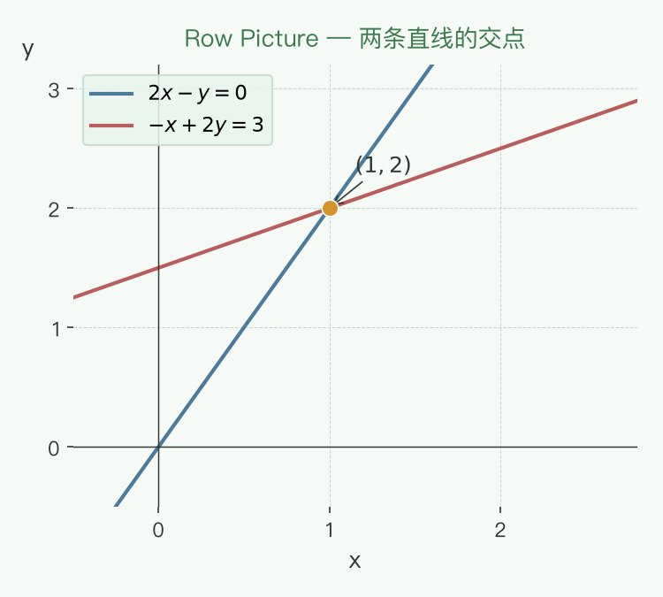
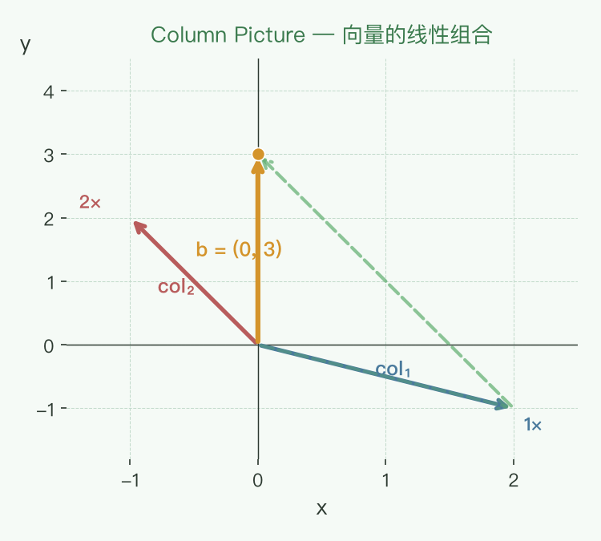
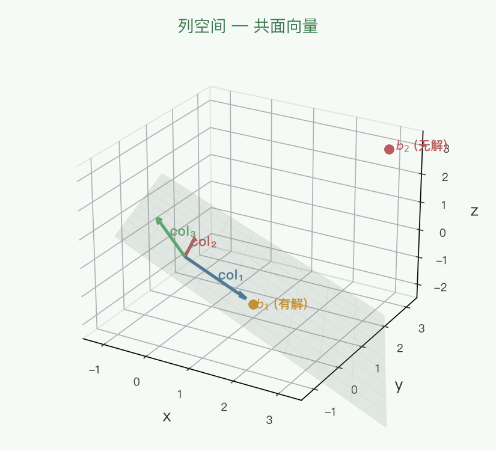

📐 方程组的几何解释
MIT 18.06 · Row Picture & Column Picture · 消元法
线性方程组的核心问题：求解一组线性方程。而看待这组方程的方式，决定了你理解线性代数的深度。
将方程组写成矩阵形式，是理解的第一步：
$$
\begin{cases}
2x - y = 0 \\
-x + 2y = 3
\end{cases}
$$
等价于矩阵形式：
$$A \mathbf{x} = \mathbf{b}$$
其中：
$$A = \begin{bmatrix}2 & -1 \\ -1 & 2\end{bmatrix},\quad
\mathbf{x} = \begin{bmatrix}x \\ y\end{bmatrix},\quad
\mathbf{b} = \begin{bmatrix}0 \\ 3\end{bmatrix}$$
矩阵形式的优势：
- 简化表示：无论多少个方程，都写成 Ax = b 这一个式子。
- 容易手工求解：消元法直接在矩阵上进行操作。
- 揭示结构：矩阵 A 的列向量结构决定了方程组的解空间性质。
二、Row Picture（行图像）
从"方程（行）"的角度出发，将每一个方程视为几何空间中的一个"几何形状"，而整个方程组的解就是这些几何形状的"交点"。
2.1 二维例子
2x - y = 0 → 一条直线
-x + 2y = 3 → 另一条直线

每一条直线代表一个方程，两条直线的交点 (1, 2) 就是方程组的解。
2.2 三维例子
$$
\begin{cases}
x + 2y + z = 2 \\
3x + 8y + z = 12 \\
4y + z = 2
\end{cases}
$$
在 Row Picture 下，每个方程代表三维空间中的一个平面。三个平面的交点就是方程组的解。
Row Picture 的局限
- 三维以上无法可视化。
- 对于大方程组（几十、几百万个方程），这种视角毫无帮助。
三、Column Picture（列图像）
这是理解线性代数最重要的视角。 将方程组左边的系数按列拆分成多个向量，右边也看成一个向量，那么求解方程组等价于：寻找一组系数，使得左边这些向量的线性组合等于右边的向量。
3.1 2D 例子
$$A \mathbf{x} = \begin{bmatrix}2 & -1 \\ -1 & 2\end{bmatrix}
\begin{bmatrix}x \\ y\end{bmatrix}
= \begin{bmatrix}0 \\ 3\end{bmatrix}$$
按列拆分：
$$x\begin{bmatrix}2 \\ -1\end{bmatrix}
+ y\begin{bmatrix}-1 \\ 2\end{bmatrix}
= \begin{bmatrix}0 \\ 3\end{bmatrix}$$
几何意义
- 有两个向量：col₁ = (2, -1), col₂ = (-1, 2)
- 我们要找一组系数 (x, y)，使得 x·col₁ + y·col₂ 恰好等于目标向量 b = (0, 3)
- 答案是 x = 1, y = 2：1·(2, -1) + 2·(-1, 2) = (0, 3)

3.2 3D 例子
考虑三对角矩阵系统：
$$A = \begin{bmatrix}2 & -1 & 0 \\ -1 & 2 & -1 \\ 0 & -1 & 2\end{bmatrix},\quad
\mathbf{b} = \begin{bmatrix}0 \\ 3 \\ 0\end{bmatrix}$$
按列拆分：
$$x\begin{bmatrix}2 \\ -1 \\ 0\end{bmatrix}
+ y\begin{bmatrix}-1 \\ 2 \\ -1\end{bmatrix}
+ z\begin{bmatrix}0 \\ -1 \\ 2\end{bmatrix}
= \begin{bmatrix}0 \\ 3 \\ 0\end{bmatrix}$$
- col₁ = (2, -1, 0), col₂ = (-1, 2, -1), col₃ = (0, -1, 2)
- 我们要找到 x, y, z 使得这三个向量的线性组合等于 (0, 3, 0)
- 答案是 (x, y, z) = (1, 2, 1)
验证： 1·(2,-1,0) + 2·(-1,2,-1) + 1·(0,-1,2) = (2-2+0, -1+4-1, 0-2+2) = (0, 3, 0) ✓
3.3 Column Picture 为什么重要？
- 自然对应矩阵乘法：A×x 的计算方式就是从列的角度看的——结果向量的每个分量 = 对应系数与列向量的组合。
- 揭示了解的存在性条件：问题从"求交"变成了"能否组合出目标向量"。
- 与后续概念（列空间、秩、基）直接挂钩：所有列向量张成的空间决定了方程组的可能性。
四、Row Picture vs Column Picture 对比
| 视角 | 几何解释 | 二维例子 | 核心问题 |
|---|
| Row Picture |
每行 = 一条直线 / 一个平面 |
两条直线求交点 |
形状的交点在哪？ |
| Column Picture |
每列 = 一个向量 |
两个向量组合成目标向量 |
能否组合出 b？ |
核心区别：Row Picture 侧重于求解，Column Picture 侧重于理解解的结构。
五、对于任意 b，是否都有解？
$$A \mathbf{x} = \mathbf{b}$$
二维情况
如果两个列向量 col₁, col₂ 不在同一条直线上（线性无关），那么它们的线性组合可以到达平面上的任意位置 b——此时一定有解。
三维情况
如果三个列向量 col₁, col₂, col₃ 属于同一个平面（线性相关），那么它们的线性组合也只能在这个平面内，不可能组成三维空间中任意的 b。

关键概念：列空间（Column Space）——所有列向量的线性组合构成的集合。方程组有解 当且仅当 b 属于 A 的列空间。
六、重新思考矩阵与向量相乘的计算方式
矩阵与向量相乘 Ax 有两种计算方式：
1. 行向量的点积（对应 Row Picture）
结果向量的每个分量 = A 的对应行与 x 的点积。
$$(A\mathbf{x})_i = \sum_{j} a_{ij} x_j$$
2. 列向量的组合（对应 Column Picture）
结果向量 = A 的每一列乘以对应的 x 分量，再求和。
$$A\mathbf{x} = x_1 \cdot \text{col}_1 + x_2 \cdot \text{col}_2 + \cdots + x_n \cdot \text{col}_n$$
在线性代数的视角下，最好用列向量的组合这种方式，尤其是大矩阵。
推荐使用列视角的原因
- 它对应了线性变换的几何直觉：坐标是"导航指令"，矩阵的列是变换后的基向量。
- 在后续学习列空间、零空间、特征向量等概念时，列视角提供了统一的几何框架。
- 在大规模数值计算中（如机器学习中的批处理矩阵运算），列视角帮助理解数据维度的含义。
七、消元法
消元法（Gaussian Elimination）是将矩阵 A 化为上三角矩阵 U 的过程。从矩阵视角看，每一次消元操作都对应一个初等矩阵在前面左乘。
消元法有可能成功，也有可能不成功——不成功时，矩阵是奇异的（Singular），即行列式为 0，不可逆。
7.1 传统视角 vs 矩阵视角
传统消元法是从行操作的角度去看：从第二行减去第一行的某个倍数，消掉第二行的主元。但线性代数给了我们一个更统一的视角——矩阵乘法。
具体例子
考虑方程组：
$$
\begin{cases}
x + 2y = 5 \\
3x + 4y = 6
\end{cases}
$$
写成矩阵形式 Ax = b：
$$A = \begin{bmatrix}1 & 2 \\ 3 & 4\end{bmatrix},\quad
\mathbf{b} = \begin{bmatrix}5 \\ 6\end{bmatrix}$$
消元目标：用 row₁ 消掉 row₂ 的第一个元素（主元 x）。
7.2 初等矩阵 E
传统做法：row₂ ← row₂ − 3·row₁，得到：
row₁: [1, 2] → 不变
row₂: [3, 4] → [3 − 3·1, 4 − 3·2] = [0, -2]
从矩阵视角看，这个操作等价于左乘一个初等矩阵 E：
$$E \cdot A = U$$
其中 E 是"从第二行减去 3 倍的第一行"的初等矩阵：
$$E = \begin{bmatrix}1 & 0 \\ -3 & 1\end{bmatrix}$$
E 针对方程组的含义
操作的本质： 将其中一个方程替换为
该方程自身减去另一方程的若干倍，从而消去一个未知数。
在本例中：
$$
\begin{cases}
x + 2y = 5 \quad \text{(eq1)}\\
3x + 4y = 6 \quad \text{(eq2)}
\end{cases}
$$
操作 $\text{eq}_2 \gets \text{eq}_2 - 3 \cdot \text{eq}_1$：
- 新 eq₂ = (3x + 4y) − 3·(x + 2y) = 6 − 3·5
- 化简：$0x - 2y = -9$，即 $y = 4.5$
E 的角色： $E = \begin{bmatrix}1&0\\-3&1\end{bmatrix}$ 左乘方程组 $A\mathbf{x} = \mathbf{b}$ 的两边：
$$E(A\mathbf{x}) = E\mathbf{b} \quad\Longrightarrow\quad (EA)\mathbf{x} = E\mathbf{b} \quad\Longrightarrow\quad U\mathbf{x} = \mathbf{c}$$
- $E$ 同时作用于 $A$ 和 $\mathbf{b}$，保证了新方程组与原方程组同解。
- 因为 $E$ 可逆（消元操作可逆），所以解集不变。
- $E$ 的第 $i$ 行 直接对应 第 $i$ 个新方程如何由原方程组合而成：
- 第 1 行 $(1, 0)$ → 新 eq₁ = 1·eq₁ + 0·eq₂（不变）
- 第 2 行 $(-3, 1)$ → 新 eq₂ = (-3)·eq₁ + 1·eq₂（eq₂ 减去 3 倍 eq₁）
一句话： $E$ 就是
对原方程组做消元操作的矩阵表示——左乘 $E$ 等价于对等式两边做相同的行变换，解不变。
验证计算
$$E \cdot A = \begin{bmatrix}1 & 0 \\ -3 & 1\end{bmatrix}
\begin{bmatrix}1 & 2 \\ 3 & 4\end{bmatrix}$$
第一行：1·[1,2] + 0·[3,4] = [1, 2]
第二行：(-3)·[1,2] + 1·[3,4] = [-3, -6] + [3, 4] = [0, -2]
结果：$U = \begin{bmatrix}1 & 2 \\ 0 & -2\end{bmatrix}$ ✓ 成功得到上三角矩阵。
7.3 消元法对应的矩阵操作
关键视角转变：消元法不仅仅是行操作技巧，更是矩阵乘法——找到合适的矩阵 X，使得 X·A = U（上三角矩阵）。每一步消元操作都对应一个初等矩阵左乘 A。
例如前面的例子，从第二行减去 3 倍的第一行，相当于找到矩阵 E：
$$E \cdot A = U, \quad E = \begin{bmatrix}1 & 0 \\ -3 & 1\end{bmatrix}$$
使 U 的第二行第一列主元被消去。
这个视角回答了一个根本问题：要达到消元的效果，在前面要左乘一个什么样的矩阵？ 左乘矩阵的每一行如何作用到原矩阵的每一行上，就是行操作的本质。
置换矩阵（Permutation Matrix）
除了消元矩阵，另一种重要的初等矩阵是置换矩阵——负责交换行或列。例如，交换两行：
$$P = \begin{bmatrix}0 & 1 \\ 1 & 0\end{bmatrix}, \quad
P \cdot \begin{bmatrix}a & b \\ c & d\end{bmatrix} =
\begin{bmatrix}c & d \\ a & b\end{bmatrix}$$
P 左乘矩阵 = 交换两行。右乘则交换列。
消元法中可能出现需要置换行的情况（例如主元为 0 时，需要交换行找到非零主元），此时就用置换矩阵 P：
完整表达： P · Eₙ ··· E₂ · E₁ · A = U，先置换（如果需要），再消元。
所有这些参与左乘的矩阵都是初等矩阵（elementary matrices），它们构成了矩阵乘法的基石。
7.4 消元过程的完整矩阵表达
对于需要多步消元的方程组，每一步对应一个初等矩阵。整个过程可以写成：
$$E_n \cdots E_2 E_1 A = U$$
其中 E₁, E₂, …, Eₙ 是每一步的初等矩阵（消元或置换）。将所有的矩阵乘法合并成一个矩阵：
$$E A = U \quad \Longrightarrow \quad A = E^{-1} U$$
其中 E = Eₙ ··· E₂ · E₁ 是复合消元矩阵。
⚠️ 注意：矩阵乘法的结合律
矩阵乘法不满足交换律（E₁E₂ ≠ E₂E₁ 一般情况下），但是满足结合律：
$$(E_3 E_2) E_1 = E_3 (E_2 E_1)$$
结合律很重要，在很多证明中都会用到。它意味着我们可以随便加括号，先计算任意两个相邻的矩阵乘法，再与剩下的矩阵相乘——结果不变。
在消元法语境下，结合律使得我们可以先把所有初等矩阵合并成一个复合矩阵 E，再一次性作用到 A 上。
关键洞察：消元法不再只是"行操作技巧"，而是矩阵乘法——一系列初等矩阵左乘 A，将 A 逐步转化为上三角 U。这个视角是理解 LU 分解（A = LU，其中 L 是下三角矩阵、U 是上三角矩阵）的基础。
7.5 通过消元法求逆矩阵
核心思想：理解消元法对应的矩阵运算后，求解逆矩阵可以通过消元动作反推，不需要按照运算法则来强行计算。
如果我们有一套消元操作将 A 变成 U（上三角），那么同样地，我们可以通过反方向的操作来恢复 A。更直接地说，求逆就是"反向消元"。
具体例子
假设我们有 2×2 矩阵 A，经过消元得到 U：
$$A = \begin{bmatrix}1 & 2 \\ 3 & 4\end{bmatrix}, \quad
E = \begin{bmatrix}1 & 0 \\ -3 & 1\end{bmatrix}, \quad
U = E A = \begin{bmatrix}1 & 2 \\ 0 & -2\end{bmatrix}$$
现在，如果要对矩阵 A 求逆，我们可以利用消元过程反过来推导：
- 正向消元知 E：E 是消元矩阵，E·A = U
- 反向推导 A⁻¹：已知 A = E⁻¹·U，如果 U 是上三角矩阵，我们可以先求 U⁻¹，再结合 E⁻¹ 得到 A⁻¹
但更直观的方式是：利用增广矩阵 [A | I]，对两边同时做消元操作，当左边变成 I 时，右边就是 A⁻¹：
$$[A \,|\, I] \xrightarrow{\text{消元}} [U \,|\, E] \xrightarrow{\text{回代}} [I \,|\, A^{-1}]$$
做完正向消元得到 U，再做反向回代（从 U 变回 I），相当于继续左乘矩阵，直到把 A 变成 I。
联系：求逆矩阵的核心就是"把消元过程反着走一遍"。LU 分解（A = LU）进一步把这一过程拆成了下三角 L 和上三角 U，使得求解线性方程组 Ax = b 变得非常高效。
一句话：理解消元法对应的矩阵操作 = 理解逆矩阵的由来。
7.6 总结
- 消元法：通过行操作将 A 变成上三角矩阵 U。
- 矩阵视角：每次行操作 = 一个初等矩阵左乘。所有初等矩阵合并成 E，E·A = U。
- 置换矩阵：用来交换行/列的初等矩阵，主元为 0 时使用。
- 结合律：矩阵乘法满足结合律，使我们能合并所有初等矩阵。
- 奇异矩阵：消元过程中出现全零行 → 矩阵不可逆。
- 求逆：通过消元操作反向推导，不需要硬算。增广矩阵 [A | I] → 消元 → 回代 → [I | A⁻¹]。
- LU 分解：A = LU，其中 L 是下三角矩阵（初等矩阵的逆的乘积），U 是上三角矩阵。
八、总结
- Row Picture：每个方程是一条线 / 一个面，解是它们的交点。适合手工求解和小规模问题。
- Column Picture：每列是一个向量，解是组合系数。这是学习线性代数的正确视角。
- 矩阵乘法 Ax 的列组合解释，将计算与几何直觉统一了起来。
- 方程组 Ax = b 有解的条件：b 在 A 的列空间（所有列向量的线性组合构成的集合）中。
- 消元法用初等矩阵左乘来实现行操作，是后续 LU 分解的基础。
一句话记住：Row Picture 告诉你"交点在哪里"，Column Picture 告诉你"是否能到达那里"。两者结合，才能真正理解线性方程组。